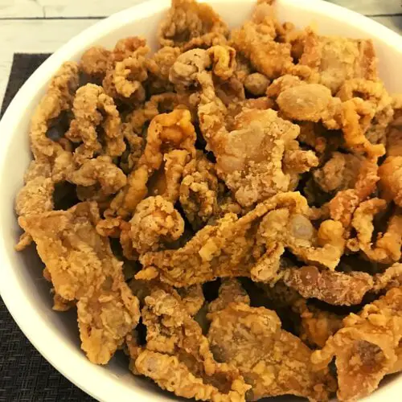

Buffalo Bill's XTRA CRISPY deep fried skins

Description
It rubs the flour on its skin or else it gets the hose again.
Ingredients
- Regularly lotioned raw skins
- Flour
- Frying oil
- Salt and pepper
Steps
- Place the skins in a large pot.
- Cover with water and boil for 10 minutes.
- Drain and transfer to a cutting board.
- Place skin on a baking sheet and refrigerate.
- Heat oil in a large stockpot to 175C.
- Fry the skins until crisp for about 4 minutes with flour.
- Sprinkle with salt.